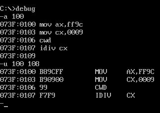
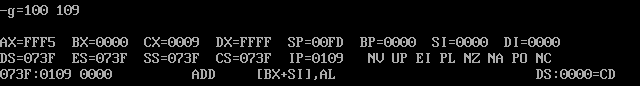
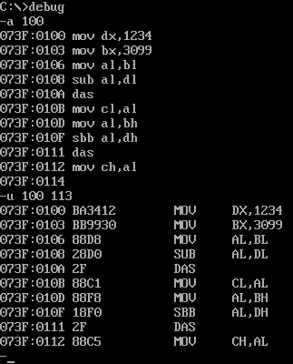
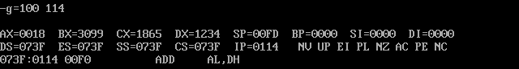

| Nama | Muhammad Arya Fatthurahman |
| NPM | 2023230006 |
| Program Studi | Teknologi Informasi |
| Kelompok NIM | Ganjil |
| Mata Kuliah | Organisasi dan Arsitektur Komputer |
| Tanggal Penyelesaian | 6 November 2026 |
Program ini membagi bilangan bertanda −100 dengan 9 menggunakan instruksi IDIV.
Dividend disiapkan dalam pasangan register DX:AX, pembagi dimuat ke CX, lalu hasil bagi dan sisa diperiksa melalui register.
| Offset | Byte | Instruksi | Maksud instruksi |
|---|---|---|---|
| 0000 | B8 FF9C | MOV AX,−100 | Memuat −100 ke AX. Dalam komplemen dua 16-bit, −100 = FF9C. DEBUG menerima nilai ini sebagai FF9C. |
| 0003 | B9 0009 | MOV CX,9 | Memuat pembagi 9 ke register CX (CX = 0009). |
| 0006 | 99 | CWD | Convert Word to Doubleword: memperluas tanda AX ke DX. Karena AX negatif, DX menjadi FFFF, sehingga DX:AX berisi −100 sebagai bilangan bertanda 32-bit. |
| 0007 | F7 F9 | IDIV CX | Pembagian bertanda DX:AX ÷ CX. Hasil bagi disimpan di AX dan sisa di DX. IDIV membulatkan hasil bagi ke arah nol. |
−100 dapat dimaknai lain. Nilai yang diketik adalah FF9C, yaitu pola bit 16-bit dari −100 desimal; encoding yang dihasilkan sama dengan instruksi buku MOV AX,−100 (B8 FF9C).
U 100 108)| Tahap | Nilai register | Penjelasan |
|---|---|---|
| Setelah MOV AX,FF9C | AX = FF9C | AX berisi −100 dalam format signed 16-bit (komplemen dua). |
| Setelah MOV CX,0009 | CX = 0009 | CX berisi pembagi 9. |
| Setelah CWD | DX = FFFF, AX = FF9C | DX:AX = FFFF:FF9C, yaitu −100 sebagai signed 32-bit. |
| Setelah IDIV CX | AX = FFF5, DX = FFFF | Hasil bagi −11 (FFF5) di AX, sisa −1 (FFFF) di DX. Sisa mengikuti tanda dividend. |

G=100 109); AX=FFF5 dan DX=FFFFPembulatan IDIV: −100 ÷ 9 = −11,111… dipotong ke arah nol menjadi −11, sehingga sisanya −1 (bukan −12 dengan sisa +8). Inilah perilaku pembagian bertanda pada 8086.
DEBUG menampilkan isi register apa adanya dalam heksadesimal, bukan nilai desimal bertanda. Karena itu AX = FFF5 harus dibaca sebagai −11 dan DX = FFFF sebagai −1; keduanya adalah bentuk komplemen dua 16-bit, bukan bilangan positif 65525 dan 65535.
Program mengurangkan 1234 dari 3099 yang disimpan sebagai packed BCD (dua digit desimal per byte).
Pengurangan dikerjakan byte demi byte dari digit terendah, lalu instruksi DAS mengoreksi hasil biner agar menjadi BCD yang benar.
| Offset | Byte buku | Byte DEBUG | Instruksi | Maksud instruksi |
|---|---|---|---|---|
| 0000 | BA 1234 | BA 3412 | MOV DX,1234 | Menyimpan 1234h (packed BCD) di DX: DH = 12, DL = 34. DX adalah bilangan yang dikurangkan. |
| 0003 | BB 3099 | BB 9930 | MOV BX,3099 | Menyimpan 3099h di BX: BH = 30, BL = 99. BX adalah bilangan yang dikurangi. |
| 0006 | 8A C3 | 88 D8 | MOV AL,BL | Menyalin byte rendah 3099 (99h) ke AL sebagai operand pengurangan pertama. |
| 0008 | 2A C2 | 28 D0 | SUB AL,DL | AL = AL − DL = 99h − 34h = 65h. Kedua digit masih sah, CF = 0. |
| 000A | 2F | 2F | DAS | Decimal Adjust after Subtraction: menyesuaikan AL agar hasilnya BCD. Karena 65h sah, AL tidak berubah. |
| 000B | 8A C8 | 88 C1 | MOV CL,AL | Menyimpan digit hasil bagian rendah (65h) ke CL. |
| 000D | 8A C7 | 88 F8 | MOV AL,BH | Memuat byte tinggi 3099 (30h) ke AL untuk pengurangan digit tinggi. |
| 000F | 1A C6 | 18 F0 | SBB AL,DH | AL = AL − DH − CF = 30h − 12h − 0 = 1Eh. SBB ikut mengurangi borrow (CF) dari pengurangan byte rendah. |
| 0011 | 2F | 2F | DAS | Mengoreksi 1Eh: digit rendah E > 9, sehingga AL dikurangi 6 menjadi 18h dan CF = 1. |
| 0012 | 8A E8 | 88 C5 | MOV CH,AL | Menyimpan digit hasil bagian tinggi (18h) ke CH, sehingga CX = 1865h. |
8A/2A/1A (register tujuan lebih dulu, dipakai buku/MASM) dan bentuk 88/28/18 (register sumber lebih dulu, dipilih assembler DEBUG).
Keduanya menghasilkan instruksi yang sama; contoh 88 D8 ≡ 8A C3 ≡ MOV AL,BL. Karena itu hasil eksekusinya identik.
U 100 113)| Tahap | Perhitungan | Hasil |
|---|---|---|
| Digit rendah | 99h − 34h = 65h; CF = 0 | DAS tidak mengubah AL; CL = 65h. |
| Digit tinggi | 30h − 12h − CF(0) = 1Eh | DAS: 1Eh − 06h = 18h; CH = 18h. |
| Gabungan | CH:CL = 18:65 | CX = 1865h (packed BCD), sesuai 3099 − 1234. |

G=100 114); CX=1865| Instruksi | Fungsi |
|---|---|
| MOV | Memindahkan data (salin) dari sumber ke tujuan; sumber tidak berubah. |
| CWD | Memperluas tanda AX ke DX sehingga terbentuk dividend 32-bit bertanda pada DX:AX (DX = 0000 bila AX positif, FFFF bila AX negatif). |
| IDIV | Pembagian bertanda. DX:AX dibagi operand; hasil bagi di AX, sisa di DX. Pembulatan ke arah nol. |
| SUB | Pengurangan biner biasa: tujuan = tujuan − sumber; memengaruhi CF, ZF, SF, OF, AF, PF. |
| SBB | Pengurangan dengan borrow: tujuan = tujuan − sumber − CF. Dipakai agar borrow dari byte rendah ikut diperhitungkan. |
| DAS | Menyesuaikan AL setelah pengurangan agar berisi packed BCD yang sah. Jika digit rendah > 9 atau AF = 1, AL dikurangi 6; jika hasil > 9Fh atau CF = 1, AL dikurangi 60h dan CF diset. |
| Perintah | Kegunaan |
|---|---|
| A 100 | Assemble: merakit instruksi mulai alamat 0100h. Baris kosong (Enter) mengakhiri perakitan. |
| U 100 108 | Unassemble: menampilkan kode mesin dan instruksi pada rentang alamat tertentu. |
| G=100 109 | Go: menjalankan program mulai 0100h dan berhenti di breakpoint 0109h, lalu menampilkan register. |
| R | Menampilkan isi register dan flag prosesor. |
| Q | Keluar dari DEBUG dan kembali ke prompt DOS. |
CWD mengubah dividend 16-bit menjadi 32-bit bertanda sebelum IDIV, dan hasil bagi mengikuti aturan pembulatan ke arah nol.SUB saja; DAS diperlukan untuk mengoreksi tiap byte agar menghasilkan digit desimal yang benar.SBB wajib digunakan pada byte berikutnya agar borrow (CF) dari byte rendah ikut dikurangkan.